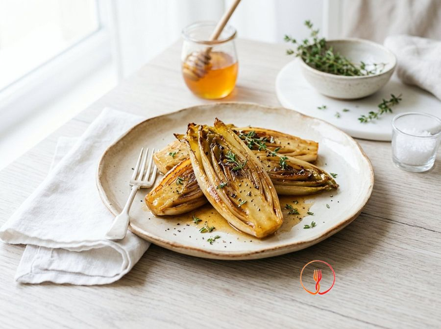

Braised Chicory with Honey and Thyme
A foolproof method to make chicory (Belgian endive) appealing to everyone, balancing its natural bitterness with a slow braise in a pan with honey and aromatic herbs.
Braised endive is a refined side dish featuring a balance between the vegetable's bitterness and the honey's sweetness. Slow pan-cooking makes it tender and pleasantly caramelized.
Ingredients
- Chicory (also known as Belgian endive)4 heads
- Butter20 g
- Wildflower honey10 g
- Fresh thyme3 sprigs
- Water or vegetable stock100 ml
- Salt and pepperto taste
Allergens
Milk
Method
- Start by carefully washing the 4 heads of Belgian endive under cold running water, then gently pat them dry with a clean tea towel to remove excess moisture. Using a sharp chef's knife, slice each head in half lengthways, taking great care not to remove too much of the root base so the leaves stay together. The end result should be 8 compact and clean halves, ready for searing. Chef's tip: do not cut deeply into the core at the base, as this part is essential for holding the endive together during the long braising process.
- Take a non-stick frying pan large enough to hold all the halves in a single layer and add 20g of butter. Turn the heat to low and let the butter melt slowly until it begins to sizzle and form a light white foam on the surface. Keep the temperature under control to prevent the butter from browning too early, which would compromise the delicate flavour of the dish. You will obtain a fragrant fat base, perfect for the vegetables. Chef's tip: use a knob of clarified butter if you prefer a higher smoke point and an even nuttier flavour profile.
- Gently place the endive halves into the pan, positioning them with the cut side down in contact with the melted butter. Slightly increase the heat to medium and let them sear for about 4-5 minutes without moving them. During this phase, the Maillard reaction will transform the natural sugars in the endive into an inviting amber crust. The result should be a well-browned and slightly crispy surface. Chef's tip: resist the urge to flip the endive too soon; deep browning is crucial to balance the vegetable's natural bitterness.
- Once the cut side is beautifully caramelised, take the 10g of wildflower honey and distribute it evenly by drizzling it directly onto the golden areas of the endive. The honey will immediately start to merge with the butter and vegetable juices, creating a sweet and floral aroma. Continue cooking over medium heat for another minute, moving the pan slightly to glaze the base thoroughly. You should see the honey bubbles becoming glossy and thick. Chef's tip: if the honey is too thick, warm it for a few seconds in the microwave to make it fluid for even distribution.
- Now add the leaves stripped from the 3 sprigs of fresh thyme, scattering them over the entire surface to release their essential oils. Immediately after, pour the 100ml of water or vegetable stock (preferably lukewarm) into the bottom of the pan, being careful of any steam splatters. The liquid should cover the base by about half a centimetre, creating the moist environment needed for braising. You will smell an intense herbal fragrance as soon as the thyme hits the hot pan. Chef's tip: use a light, low-sodium vegetable stock to prevent the final reduction from becoming overly salty.
- Lower the heat to minimum, cover the pan with a tight-fitting lid and let the endive braise for about 7-8 minutes. In this stage, the trapped steam will soften the internal fibres of the vegetable while the base continues to soak up flavour from the cooking liquid. The temperature must remain constant to allow even cooking right through to the core of the head. The result will be endives that start to become translucent and tender. Chef's tip: if you don't have a lid of the right size, you can use a disc of wet baking parchment placed directly on the vegetables to maintain moisture.
- After the first few minutes, remove the lid and gently flip the halves using kitchen tongs, bringing the rounded side downwards. Cover again and continue cooking for another 7-8 minutes, monitoring that the liquid doesn't dry out completely. The endive is ready when a knife tip inserted into the thickest part near the base enters without resistance. The final texture should be meltingly soft, almost buttery. Chef's tip: if you notice the liquid drying out too quickly, add a tablespoon of water to prevent the honey from burning.
- Remove the lid for the final time and slightly increase the heat for the last 2 minutes of cooking. This step is to reduce the remaining liquid until it becomes a thick, glossy, amber-coloured syrup. Use a spoon to collect this cooking liquor and repeatedly baste (napper) the surface of the endive. You will see the vegetables turn shiny and take on a very appealing mahogany colour. Chef's tip: move the pan in circular motions to emulsify the butter fat with the honey sugars, achieving a velvety sauce.
- Turn off the heat and season with salt and freshly ground black pepper to taste. Arrange the halves on a warmed serving platter, making sure to scrape out every last drop of the glaze left in the pan to garnish the dish. Serve the endive piping hot, perhaps decorating with a few more fresh thyme leaves to enhance the herbal aroma. The dish will present as an elegant side where the honey's sweetness perfectly balances the typical Belgian bitterness. Chef's tip: a grind of white pepper instead of black will provide a subtler, more refined heat that won't overpower the honey's delicate notes.
Tips
- Remove only the outermost part of the base to keep the head intact during the slow cooking process.
- Keep the heat at a minimum during braising to prevent the honey from burning and turning bitter.
- Use fresh thyme sprigs to scent the cooking juices without overpowering the taste of the endive.
Variations
- Replace the wildflower honey with maple syrup for a version with a woodier flavor.
- Deglaze with a tablespoon of apple cider vinegar before adding water to balance the sweetness.
Nutrition facts (estimate)
| Per serving (115 g) | Per 100 g | |
|---|---|---|
| Energy | 301 kJ / 72 kcal | 262 kJ / 63 kcal |
| Protein | 1.4 g | 1.2 g |
| Carbohydrates | 5.8 g | 5.0 g |
| of which sugars | 4.2 g | 3.7 g |
| Fat | 4.5 g | 3.9 g |
| of which saturates | 2.8 g | 2.4 g |
| Fibre | 3.2 g | 2.8 g |
| Salt | 0.35 g | 0.3 g |
AI estimates based on average CREA / USDA data: indicative only, not a substitute for medical or dietitian advice.
Open the recipe in the app for the shopping list, ingredient sheets and nearby shops.